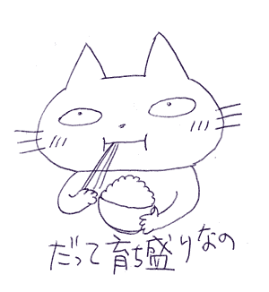
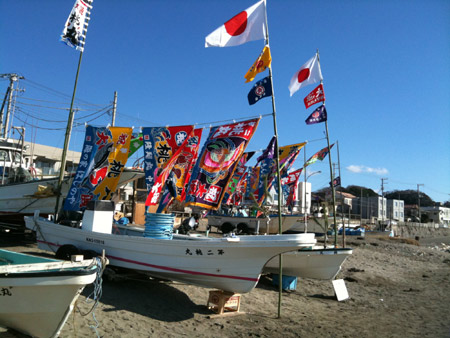
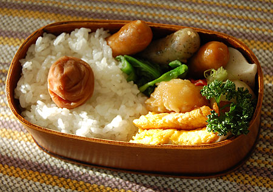
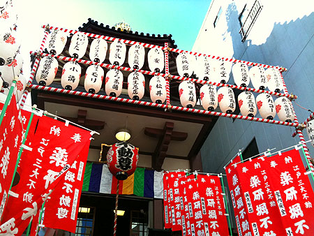
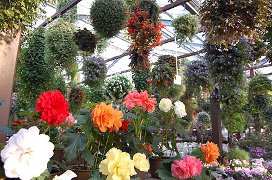
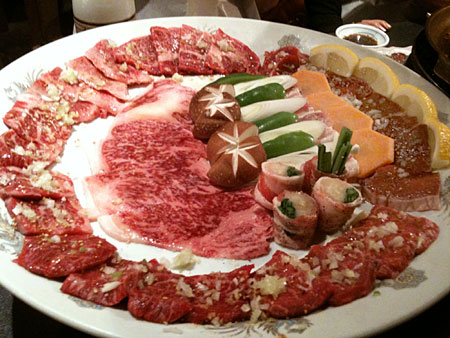
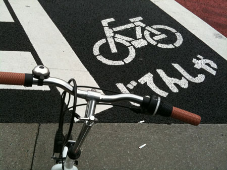

かに風味ブログ
-
鍋城主なわたくし
エンゲル係数が高いなーと、家計簿見ながらつくづく思う。 だからといって反省してご飯と梅干だけの日々にするわけではないけど。 とはいえ、決して毎日饗宴を催しているわけではなく、今の季節はもっぱら鍋三昧…

-
不思議なプロペラ
先日、プロペラ機DHC8-Q400に乗ってきました。 プロペラはギリシャのミコノスに行った時以来かも。 あまり評判のよくないボンバルディア機だったけど、乗り心地は上々。揺れも少なめなような。 もとも…
-
ブルームーン
ひと月に2度満月がおこるブルームーン。1月31日は2度目の満月。ブルームーン。 ちょうどその日宿泊したお風呂場がすばらしく眺めの良い浴室で、浴槽に浸かりながら満月に照らされた海を一望。 月光浴＆入浴と…

-
ブーちゃんとわたくし
最近、ネコのブーちゃんと仲良くしてます。 実際には黒々としたでっかい黒猫。 太っているメタボ系の猫ではなくて、こーゆー種類かっ！…と納得できるような骨格からの大きさで、 ふつーの猫がチワワだとし…

-
トリッパ
美味しいイタリアン食べたい病です。 とりあえず、トリッパ煮てみましたよっ！ ウチからちょっと自転車を走らせた先にコリアンタウンがあって、そこにある精肉店はホルモン類が充実。 んで、ハチノスも当たり前の…

-
新春骨董市
正月最終日（？） 東京国際フォーラムまで自転車ちゃりちゃり出掛けて行って、骨董市を見に行ってきました。 さむうううううい！ パリの骨董市を彷彿する、西洋アンティークのお店もあれこれ。 でも、パリの…

-
MAKOTOさま
正月早々材木座に行ってきましたっ！ 超超超ちょお久しぶりの鎌倉ビーチコーミングです。 正月に鎌倉へ出るのは混雑もありそうでちょっと心配だったのだけど、駅さえ出てしまえば 海方面には特に混雑もなく気分は…

-
元旦都内
あけましておめでとうございます。 2010！いきなり月食からはじまった2010年。今月はひと月に2度満月があるブルームーンだったりして月が気になるスタートとなりました。 起床後、微妙なお節。お弁当強…

-
♪♪
地味に弁当生活続いております。 梅干がだいぶこなれてきた感じ。 それにしても曲げわっぱの弁当箱は優秀。 この寒い季節でも美味しく食べられる。逆にちょっと冷えたごはんが美味しく感じるくらい。

-
寒い日ポタリング
寒波到来の週末。 ちょりっとポタです。あいかわらずのダラダラぐるぐるモードで、特に目的もなく地図もなく。 薬研堀不動尊。 でっかいカモメジュースのパックがお供えされてますがな。 親子丼で有名な玉…

-
こないだフェリー
先日の旅行のことをすこし。 メインは直島観光だったのだけど、こちらの記録は別途また「直島観光2010」としてまとめる予定として、その他のことをすこし。といっても、旅のほとんどは船に乗っていて、どっかに…

-
フクロウ三昧
しばらく放置しておりました。 一度放置するとなかなか書くきっかけを失うものですねー。…と言い訳してみたりして… ちょっと変な旅をしてました。 ヘンと言っても、まー国内なのでたかがしれているのだけど、飛…

-
ごめーん
トーキョー戻って、好き勝手に食べていたらどうも太った。 体重計が無いからわかんないんだけど、たぶん2-3キロは太ってるはず！ ウチ腿の雰囲気とかちがう！ というわけで、しばらく炭水化物と脂質を減らす…

-
午前中の…
自転車でふらついています。 どこまでいけるのか自宅を中心に等間隔でまわっております。 意外と思いがけないとこまで行けるのだなーと。思ったりなんだり。 トーキョーは歌いながら歩いている人が多い。…

-
すごいパン
ボワブローニュのパン。 天然酵母の生地もムチムチしていて美味しいのだけど、特筆すべきはこの！レーズン！ パン食べてんだかレーズン食べてんだかわかんないとゆーボリューム！ しかもこのレーズンがんまいの！…

-
銀座ポタリング
折りたたみ自転車を購入したので、足慣らしにポタリング。 九州にいたときは、自転車に乗る…というとサイクリング！って感じだったけど、 こっちはポタリング。だるーく街をまわってみますね。 6号線、14号…

-
voie lactee
神谷町にあるvoie lacteeに行ってきました。 こちらは現代陶芸コレクターの菊池智氏の美術館に併設されたレストランです。 最近、雑誌、テレビでも紹介されているので有名になりつつありますがー……

-
都民交響楽団 定期演奏会
twitterでも実況しましたが… 都民交響楽団の定期演奏会に行ってきました。 事前に往復はがきで申し込みをすれば無料！ 東京文化会館は音響もいいのでおすすめです（あくまでも私感ですがｗ）。 中学、高…

-
iphone 3GSを飼いました
どういうわけか、長らくiphoneに見向きもしていなかったのだけど、 セカイカメラの発表で「あ！ほしい！」って思っちゃいました。えへ。 会社に端末があるので、しばらくいじくり倒させていただいてから、…

-
フォアグラテリーヌ レシピ
瓶詰めフォアグラのレシピがあんまり無いので覚え書きとして記録。 使うのは手前のパッキン付きガラス瓶。 フランスの老舗ガラス器メーカー、ル・パルフェのガラス瓶（テリーヌジャー）です。 合羽橋で半額で購…